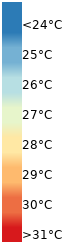
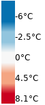

<!doctype html>
<html lang="en">
    <head>
        <meta charset="utf-8">
        <meta http-equiv="X-UA-Compatible" content="IE=edge">
        <meta name="viewport" content="initial-scale=1,user-scalable=no,maximum-scale=1,width=device-width">
        <meta name="mobile-web-app-capable" content="yes">
        <meta name="apple-mobile-web-app-capable" content="yes">
        <link rel="stylesheet" href="css/leaflet.css">
        <link rel="stylesheet" href="css/qgis2web.css"><link rel="stylesheet" href="css/fontawesome-all.min.css">
        <style>
        html, body, #map {
            width: 100%;
            height: 100%;
            padding: 0;
            margin: 0;
        }
        </style>
        <title>Land Surface Temperature (LST) Szeged</title>
    </head>
    <body>
    <logo>
        <div id="logo">
        
        </div>
    </logo>
        <div id="map">
        </div>
        <script src="js/qgis2web_expressions.js"></script>
        <script src="js/leaflet.js"></script>
        <script src="js/leaflet.rotatedMarker.js"></script>
        <script src="js/leaflet.pattern.js"></script>
        <script src="js/leaflet-hash.js"></script>
        <script src="js/Autolinker.min.js"></script>
        <script src="js/rbush.min.js"></script>
        <script src="js/labelgun.min.js"></script>
        <script src="js/labels.js"></script>
        <script src="js/leaflet.wms.js"></script>
        <script src="data/SzegedUrbanFootprint_3.js"></script>
        <script>
        var map = L.map('map', {
            zoomControl:true, maxZoom:28, minZoom:1
        }).fitBounds([[46.23710098571054,20.107177338699273],[46.26732476385711,20.17958436351797]]);
        var hash = new L.Hash(map);
        map.attributionControl.setPrefix('<a href="https://github.com/tomchadwin/qgis2web" target="_blank">qgis2web</a> &middot; <a href="https://leafletjs.com" title="A JS library for interactive maps">Leaflet</a> &middot; <a href="https://qgis.org">QGIS</a>');
        var autolinker = new Autolinker({truncate: {length: 30, location: 'smart'}});
        var bounds_group = new L.featureGroup([]);
        function setBounds() {
        }
        map.createPane('pane_GoogleSatelliteImagery_0');
        map.getPane('pane_GoogleSatelliteImagery_0').style.zIndex = 400;
        var layer_GoogleSatelliteImagery_0 = L.tileLayer('http://mt0.google.com/vt/lyrs=s&hl=en&x={x}&y={y}&z={z}', {
            pane: 'pane_GoogleSatelliteImagery_0',
            opacity: 1.0,
            attribution: '',
            minZoom: 1,
            maxZoom: 28,
            minNativeZoom: 0,
            maxNativeZoom: 18
        });
        layer_GoogleSatelliteImagery_0;
        map.addLayer(layer_GoogleSatelliteImagery_0);
        map.createPane('pane_Deviationfromtheterritoryaverage277C_1');
        map.getPane('pane_Deviationfromtheterritoryaverage277C_1').style.zIndex = 401;
        var layer_Deviationfromtheterritoryaverage277C_1 = L.WMS.layer("https://greencitylab.terranis.fr/geoserver/wms?tiled=true", "n4c:2020_szeged_DistTempMeanImage", {
            pane: 'pane_Deviationfromtheterritoryaverage277C_1',
            format: 'image/png',
            uppercase: true,
            transparent: true,
            continuousWorld : true,
            tiled: true,
            info_format: 'text/html',
            opacity: 1,
            identify: false,
            attribution: '',
        });
        map.addLayer(layer_Deviationfromtheterritoryaverage277C_1);
        map.createPane('pane_LandSurfaceTemperature_2');
        map.getPane('pane_LandSurfaceTemperature_2').style.zIndex = 402;
        var layer_LandSurfaceTemperature_2 = L.WMS.layer("https://greencitylab.terranis.fr/geoserver/wms?tiled=true", "n4c:2020_szeged_LST", {
            pane: 'pane_LandSurfaceTemperature_2',
            format: 'image/png',
            uppercase: true,
            transparent: true,
            continuousWorld : true,
            tiled: true,
            info_format: 'text/html',
            opacity: 1,
            identify: false,
            attribution: '',
        });
        map.addLayer(layer_LandSurfaceTemperature_2);
        function pop_SzegedUrbanFootprint_3(feature, layer) {
            var popupContent = '<table>\
                    <tr>\
                        <td colspan="2">' + (feature.properties['id_com'] !== null ? autolinker.link(feature.properties['id_com'].toLocaleString()) : '') + '</td>\
                    </tr>\
                    <tr>\
                        <td colspan="2">' + (feature.properties['area_com'] !== null ? autolinker.link(feature.properties['area_com'].toLocaleString()) : '') + '</td>\
                    </tr>\
                    <tr>\
                        <td colspan="2">' + (feature.properties['pop_com'] !== null ? autolinker.link(feature.properties['pop_com'].toLocaleString()) : '') + '</td>\
                    </tr>\
                    <tr>\
                        <td colspan="2">' + (feature.properties['d_pop_com'] !== null ? autolinker.link(feature.properties['d_pop_com'].toLocaleString()) : '') + '</td>\
                    </tr>\
                </table>';
            layer.bindPopup(popupContent, {maxHeight: 400});
        }

        function style_SzegedUrbanFootprint_3_0() {
            return {
                pane: 'pane_SzegedUrbanFootprint_3',
                opacity: 1,
                color: 'rgba(239,239,239,1.0)',
                dashArray: '',
                lineCap: 'butt',
                lineJoin: 'miter',
                weight: 4.0, 
                fill: true,
                fillOpacity: 1,
                fillColor: 'rgba(152,125,183,0.0)',
                interactive: false,
            }
        }
        map.createPane('pane_SzegedUrbanFootprint_3');
        map.getPane('pane_SzegedUrbanFootprint_3').style.zIndex = 403;
        map.getPane('pane_SzegedUrbanFootprint_3').style['mix-blend-mode'] = 'normal';
        var layer_SzegedUrbanFootprint_3 = new L.geoJson(json_SzegedUrbanFootprint_3, {
            attribution: '',
            interactive: false,
            dataVar: 'json_SzegedUrbanFootprint_3',
            layerName: 'layer_SzegedUrbanFootprint_3',
            pane: 'pane_SzegedUrbanFootprint_3',
            onEachFeature: pop_SzegedUrbanFootprint_3,
            style: style_SzegedUrbanFootprint_3_0,
        });
        bounds_group.addLayer(layer_SzegedUrbanFootprint_3);
        map.addLayer(layer_SzegedUrbanFootprint_3);
            var title = new L.Control();
            title.onAdd = function (map) {
                this._div = L.DomUtil.create('div', 'info');
                this.update();
                return this._div;
            };
            title.update = function () {
                this._div.innerHTML = '<h2><div align="right">Land Surface Temperature (LST) using Landsat8 imagery<br><font size="-1">Szeged urban footprint - Turkey | August 2020</font></div></h2>';
            };
            title.addTo(map);
        var baseMaps = {};
        L.control.layers(baseMaps,{' Szeged Urban Footprint': layer_SzegedUrbanFootprint_3,'Land Surface Temperature<br> ': layer_LandSurfaceTemperature_2,'Deviation from the territory average (=27.7°C)<br> ': layer_Deviationfromtheterritoryaverage277C_1,"Google Satellite Imagery": layer_GoogleSatelliteImagery_0,},{collapsed:false}).addTo(map);
        setBounds();
        </script>
    </body>
</html>
